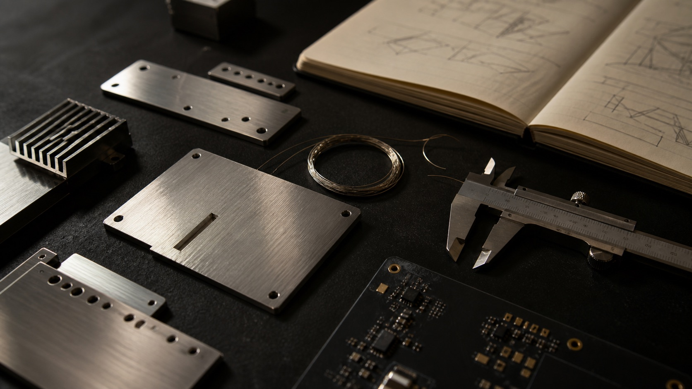

Software
Make intelligence useful.
For builders drawn to agents, applied AI, product systems, and the infrastructure that turns a good idea into something people can depend on.
Apply for SoftwareAnticipation Labs · Fellowship
A fellowship for unusually ambitious people who want to work close to the software, hardware, and distribution of an early-stage AI company.
Great builders do not learn at arm's length. They get close to difficult problems, take responsibility early, and discover what the work actually demands.
The Anticipy Fellowship is a way to build near a company where AI has to become software, an object, and a story people understand.

Three ways in
Different disciplines. One company. Pick the track closest to how you like to turn unclear problems into real things.
Make intelligence useful.
For builders drawn to agents, applied AI, product systems, and the infrastructure that turns a good idea into something people can depend on.
Apply for SoftwareGive the system a body.
For people who think through objects, circuits, mechanisms, and prototypes—and want to understand what it takes to make intelligence wearable.
Apply for HardwareMake something new make sense.
For people obsessed with why ideas travel—how a young product earns attention, finds its first believers, and becomes part of the conversation.
Apply for GrowthWhy Anticipy
Anticipy is building an AI wearable that turns spoken commitments into completed actions. That means the hard problems do not stay in one discipline.
Work close to a product that has to leave the prototype, meet the physical world, and be useful to actual people.
Start with the outcome, not a perfectly written task. Ask better questions. Follow the work through.
Software changes hardware. Hardware changes the story. Distribution changes what gets built next.
Move with enough speed to discover what is true, then bring that knowledge back into the next version.
The path in
The website makes the case. The external application starts the conversation.
Tell us what you make, notice, and want to get better at.
We look for evidence of initiative, curiosity, and care in the work.
If there is a fit, the next step is a conversation with the team.
Selected fellows get close to the problems and start making.
No account to create here. No dashboard to decode. Apply through one external form.
Apply NowWho should apply
You do not need a perfect résumé. You need a point of view, the nerve to start, and something that shows how you think when nobody has written the instructions yet.
FAQ
Only what we can answer without hand-waving.
Anticipy is building a titanium AI pendant that hears the promises you make out loud and follows them through to a completed action.
Choose the track closest to how you naturally like to build: through systems, physical objects, or distribution. Curiosity across the other two is a strength.
Show how you think and what you make. A project, experiment, piece of writing, prototype, or unusual initiative can say more than polished credentials.
The team reviews your Google Form application. Selected applicants are invited to a conversation before any fellowship work begins.
Your move
If this is the kind of room you have been looking for, put your work on the table.
Apply Now